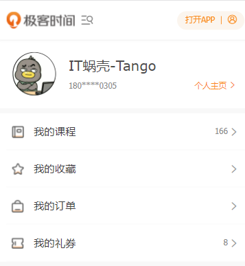
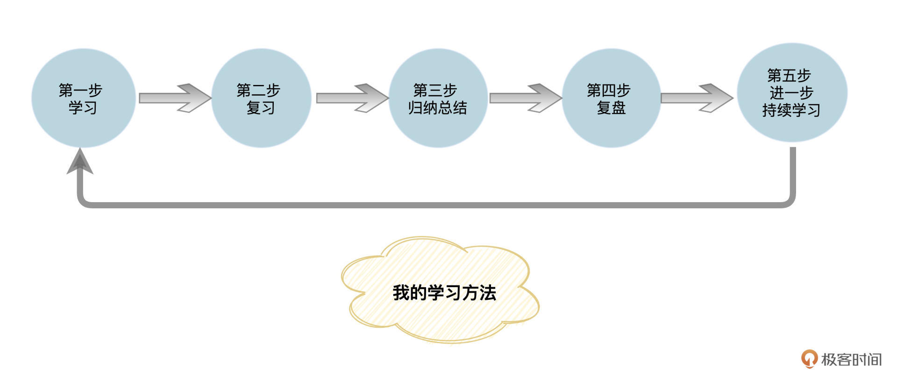
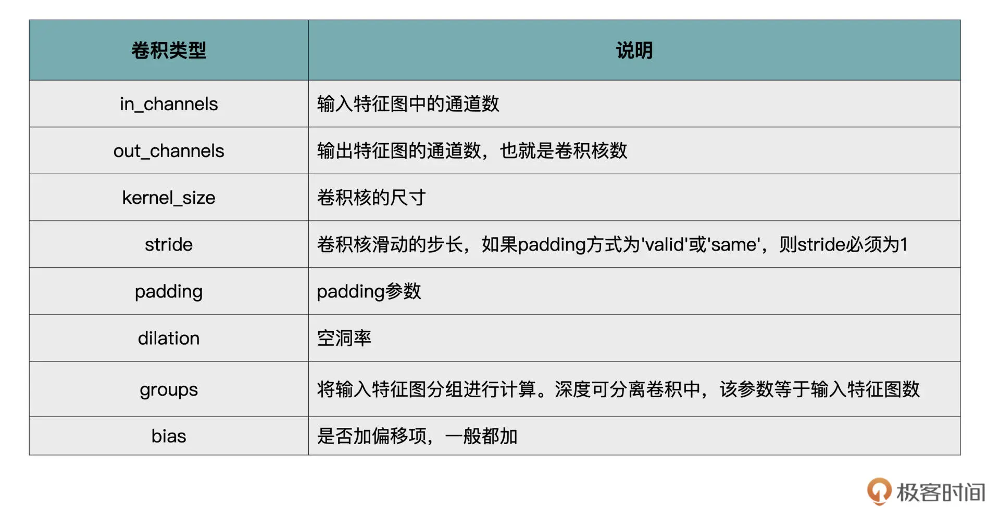
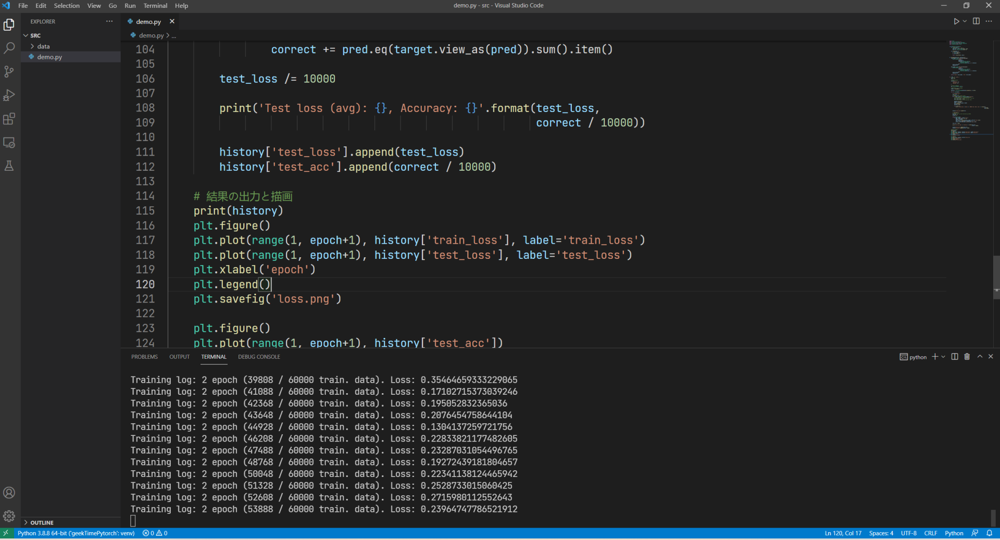
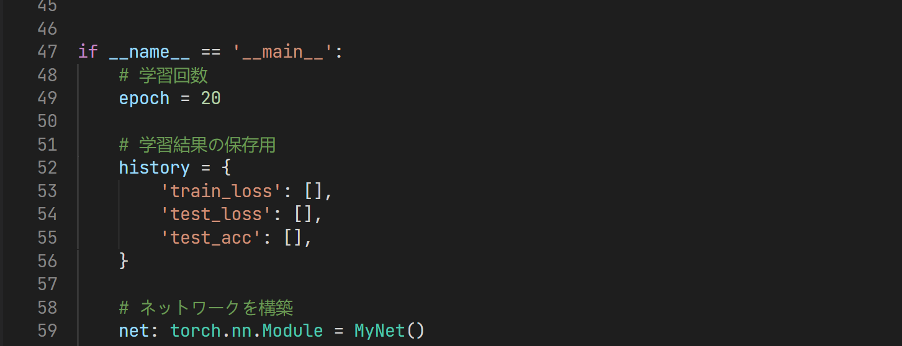

- 00 开篇词 如何高效入门PyTorch？.md.html
- 01 PyTorch：网红中的顶流明星.md.html
- 02 NumPy（上）：核心数据结构详解.md.html
- 03 NumPy（下）：深度学习中的常用操作.md.html
- 04 Tensor：PyTorch中最基础的计算单元.md.html
- 05 Tensor变形记：快速掌握Tensor切分、变形等方法.md.html
- 06 Torchvision（上）：数据读取，训练开始的第一步.md.html
- 07 Torchvision（中）：数据增强，让数据更加多样性.md.html
- 08 Torchvision（下）：其他有趣的功能.md.html
- 09 卷积（上）：如何用卷积为计算机“开天眼”？.md.html
- 10 卷积（下）：如何用卷积为计算机“开天眼”？.md.html
- 11 损失函数：如何帮助模型学会“自省”？.md.html
- 12 计算梯度：网络的前向与反向传播.md.html
- 13 优化方法：更新模型参数的方法.md.html
- 14 构建网络：一站式实现模型搭建与训练.md.html
- 15 可视化工具：如何实现训练的可视化监控？.md.html
- 16 分布式训练：如何加速你的模型训练？.md.html
- 17 图像分类（上）：图像分类原理与图像分类模型.md.html
- 18 图像分类（下）：如何构建一个图像分类模型_.md.html
- 19 图像分割（上）：详解图像分割原理与图像分割模型.md.html
- 20 图像分割（下）：如何构建一个图像分割模型？.md.html
- 21 NLP基础（上）：详解自然语言处理原理与常用算法.md.html
- 22 NLP基础（下）：详解语言模型与注意力机制.md.html
- 23 情感分析：如何使用LSTM进行情感分析？.md.html
- 24 文本分类：如何使用BERT构建文本分类模型？.md.html
- 25 摘要：如何快速实现自动文摘生成？.md.html
- 加餐 机器学习其实就那么几件事.md.html
- 用户故事 Tango：师傅领进门，修行在个人.md.html
- 答疑篇 思考题答案集锦.md.html
- 结束语 人生充满选择，选择与努力同样重要.md.html
- 捐赠
用户故事 Tango：师傅领进门，修行在个人
你好，我是Tango。
很高兴能有机会来分享我对这个专栏的学习体验。先做个自我介绍，我是一个工作了11年的非科班出身程序员（大专日语专业）。目前在NTTDATA（中国）数据信息技术有限公司工作，出于对编程的兴趣便加入了咱们开发者大军。
如果你平时关注部落或者InfoQ写作平台的话，可能对我的头像有点印象。从2017年购买的第一门课到现在，我已经累计学习了153门课程，其中学完的有130门课。作为一个文科生，在没有遇到极客时间之前，我都是在某宝上找资源自学或者买相关的图书，但是那种学习效果并不是很理想。

随着近些年机器学习的大热，我也开始接触这一块的内容。说实话，想入门机器学习这个领域还是很辛苦的一件事，不单要完成逻辑思维层面的转换，更需要补充很多基础知识。
之前我买过很多书，但是看起来总是很费劲。而网上能找到的资料，要么通篇数学公式，让我这种数学知识都还给老师的同学扼腕叹息，要么一笔带过原理，一直堆砌代码片段。总之，学习下来极其痛苦，也很难抓到重点是什么。所以当看到咱们这个专栏上线，就第一时间入手了。
相比之前阅读的纸质图书，我觉得通过专栏学习还是有不少优点的。
首先，老师沉淀的经验都来自于实际项目，这样我们接触到的知识便是最有用的部分。
其次，因为专栏形式是音频配合图文，可以很好地增加记忆。比方说，通勤路上或者其他零散时间我会听听音频，而有了整块儿时间还会回看图文内容，复习之前所学。
最后还有一点我尤其看重，就是专栏提供的互动功能，可以在专栏课程下面还有社群（主要是微信群）跟老师、同学互动。三人行，必有我师，很多时候，技术学习需要良好的交流、讨论氛围。
在业余时间，我也参加过开源社区的活动，目前在OpenVINO中文社区做志愿者，而OpenVINO就是做机器学习推理的，这让我对如何利用PyTorch来训练模型更加感兴趣。
这个专栏从基础理论到实战篇，每一篇都是干货满满，这要比我在网上看的视频，买的书要好很多，但伴随着知识的密集和难度的增加，如何做到能更好地掌握专栏的内容，让学习效果达到最好，也成为了一个亟待解决的问题。
我的学习方法
我梳理了一下自己的学习方法，主要是这样五步：学习、复习、归纳总结、复盘和进一步持续学习。

先说说初步学习，我用的日常听音频+周末整体理解的方式。每周3篇的更新频率，要学习的内容还是很多的，如果只是听音频基本上收获是很少的，所以我习惯用周末的时间，将专栏中的代码写一遍，重新理解一下文章中的内容，尤其是文章中的代码，更值得仔细研读。
好多小伙伴看到专栏不是视频课程就不想加入，其实我整个学习下来，感觉图文专栏的学习效率会更高一些。
之后就是复习，和软技能类的专栏不同，我们如果只在通勤路上或者做家务的时候听一听，那学习效果就会大打折扣。这类需要大量动手实践类的专栏，是需要反复学习、动手实践、消化理解后进行归纳总结的。
那怎样归纳总结呢？将专栏中的知识点归纳成文章发布在InfoQ写作平台，这是我比较推荐的一个方法。我之前的笔记有一部分写在了本地MarkDown文档里，后来发现，有的时候需要查找时还是很不方便，所以慢慢就转到了InfoQ写作平台上面。这样不但可以随时可以查看自己的笔记，还可以分享给他人。
说完方法，我想还想聊聊有什么内容值得归纳总结。在我看来，除了专栏中的知识点，微信群和专栏的留言区老师的答疑也是很大的宝藏，很值得整理出来。上面提到的总结内容，等到我把专栏讲解内容消化之后，我会一起公布在InfoQ写作平台上，也欢迎小伙伴围观。
除了文字的输出，为了实践“费曼学习法”，检验自己的学习效果，并将自己掌握的内容和其他人分享，我有时候还会到B站直个播。直播过程中有问题或者细节想不起来了，还会重新去看专栏，或者去网上搜索一下。这也就是为啥我的直播总是“翻车”。
编程的课程在学习时，很容易出现一种错觉，眼睛觉得学会了，可实际动手写的时候，又好像感觉之前的内容没学到位。有了这个直播写代码的过程，我觉得会让学习变得轻松有意思一些，也能够查漏补缺。
最后还有一个持续学习的问题，很多专栏虽然完结了，但是评论区的内容还是不断出现新内容以及新的知识点，那么如何实时跟踪专栏的评论区内容的更新呢？我采用了自动化的方式，自己写一个工具去定时跟踪。比如一个星期去把专栏留言以及老师回复的内容抓取一下，然后利用下一周的时间整理一下。
另外，专栏毕竟篇幅有限，很多内容没有办法在专栏中事无巨细的交代。如果在工作或者项目中遇到了，则需要自己动手去查找，这也是一个持续学习的过程。
学习收获与建议
在我看来，学习这门课程绝对是一个正确的选择。因为通过学习方远老师的这个专栏，我不但很好地掌握了PyTorch的不少重要知识，还了解一些常用数学公式的定义，也算意外之喜。
老师会用Python代码来解释公式的代码逻辑，我们都知道，Python的代码相对容易理解，对入门同学来说，这大大降低了学习成本。
通过整个专栏的学习，我基本已经掌握了PyTorch的基本运用。在整个学习过程中，还结交了很多一起学习的小伙伴。老师关于VGG，GoogLeNet以及ResNet的讲解简洁明了，这对想了解机器视觉领域算法的新手有很大的帮助。
在整个专栏的学习过程中，印象最深的地方就是老师在讲完理论知识点后，便会用实际生活中的例子来做联系，就拿基础部分的NumPy相关的内容来说，老师用一个章节讲了需要掌握的知识点后，在下一个章节中就利用了上个章节中的内容，用极客时间的Logo做了一个实际可操作的Demo。这对新手来说非常友好，可以很快地将所学的内容运用起来，学起来很过瘾。
在后面的学习中，我了解到原来NumPy是不可以用来GPU加速的，而Tensor却是可以的。这个知识点我之前却从来未了解过，学到这个对我后面的训练起到了很大的帮助，我也重构了部分之前的代码，效果显著。
在学习卷积相关的章节时老师很贴心地整理一份文档：

这个文档在我的项目中也帮我节省了一些查找资料的时间。
在接触咱们这门课之前，参加大会的时候，经常听到别人提到多机多卡的方式进行模型训练，可是怎么操作并不太清楚。在学完咱们这个专栏，我已经掌握了如何搭建分布式的训练环境，等我的显卡到了，我就要开始动手试试了。
现在暂时先将专栏的第16课收藏了起来，以下是老师给的关键代码块：
if args.distributed:
if args.dist_url == "env://" and args.rank == -1:
args.rank = int(os.environ["RANK"])
if args.multiprocessing_distributed:
# For multiprocessing distributed training, rank needs to be the
# global rank among all the processes
args.rank = args.rank * ngpus_per_node + gpu
dist.init_process_group(backend=args.dist_backend, init_method=args.dist_url,
world_size=args.world_size, rank=args.rank)
另外，我在学完第一遍后尝试用PyTorch做了一个日文识别的项目，目前还在编写中，以下代码片段是手写体数字识别（MNIST）中的部分内容:

整个训练次数设置为20回：

在学完方老师的专栏后，想利用PyTorch来实现一下，看看OpenVINO结合PyTorch的效果如何。目前还在学习阶段，等后面可以展示的时候，我会将GitHub的地址放在评论区或者社群中。
从代码上看，感觉要比TF更加容易，API的变动也没有TF的那么大，很适合用来做学习。而且后期转换成OpenVINO所支持的形式也是很方便的，只需使用OpenVINO的model optimizer将ONNX转换为IR形式即可。
除了前面的启发，好用的工具也会大大提升工作效率。专栏里介绍的TensorboardX 和 Visdom工具（15讲）就很不错，可以更好地在可视化深度学习模型的训练过程中，实时监控一些数据，例如损失值、评价指标等等，我之前一直是自己在notebook中查看的，现在用到了课程里讲到的工具，可视化方便了很多，也节省了很多时间。
最后实战篇的内容也值得反复琢磨。比方说，在学习本专栏之前一直比较困惑，面对不同风格的PDF文件，如何才能准确提取出我需要的内容。在学完课程后（17 ~ 18讲），给了我很大启发，我可以先将PDF（不可编辑的版本）转换成图片，然后按照规则先训练好目标分类，再按照不同的分类进行图像识别从而提取出我所需要的内容（19 ~ 20讲）。
说了这么多，还是很希望你也和我一样，一起深入学习专栏，一起动手尝试实验。如果你和我一样已经加入到了学习队伍中，希望你在学习一遍后能有所收获，欢迎和我一起来N刷这门课程，一定会有不同的收获，如果你在实际项目中有什么问题，可以一起在评论区或者社群中积极讨论。
以上便是我分享的内容了，感谢你的阅读，如果能对你有所帮助，那是我最大的荣幸，如果有不足的地方，也欢迎留言提出，我们一起进步。极客时间，让学习成为习惯。
© 2019 - 2023 Liangliang Lee. Powered by gin and hexo-theme-book.